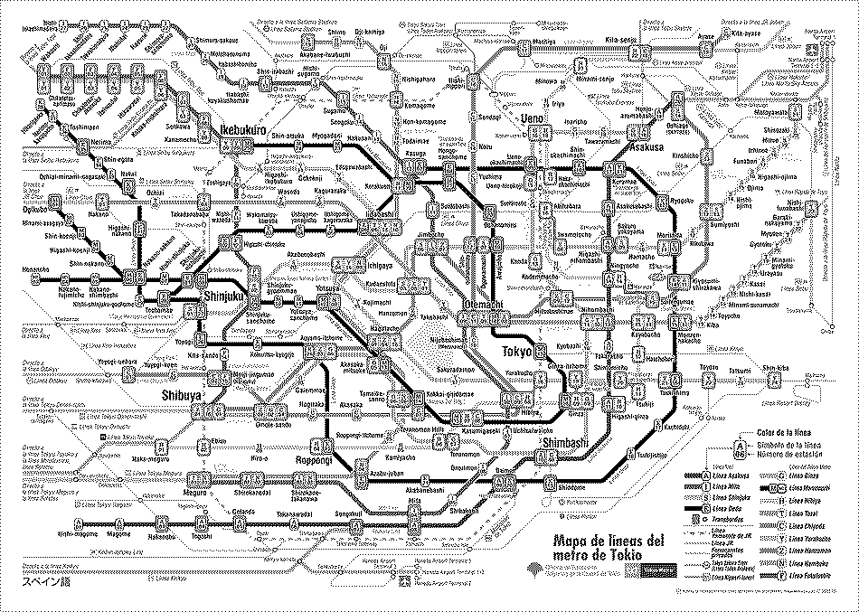
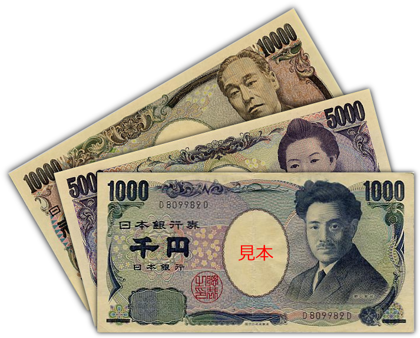
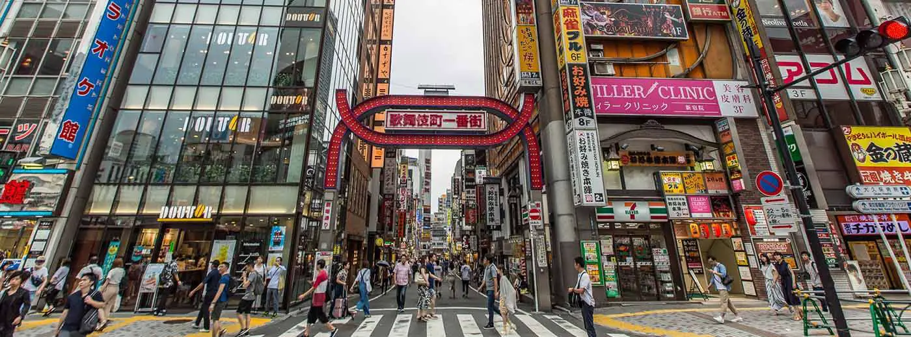
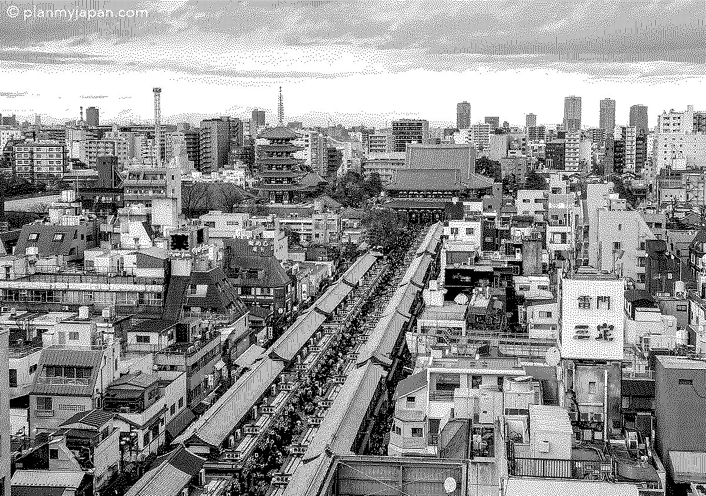
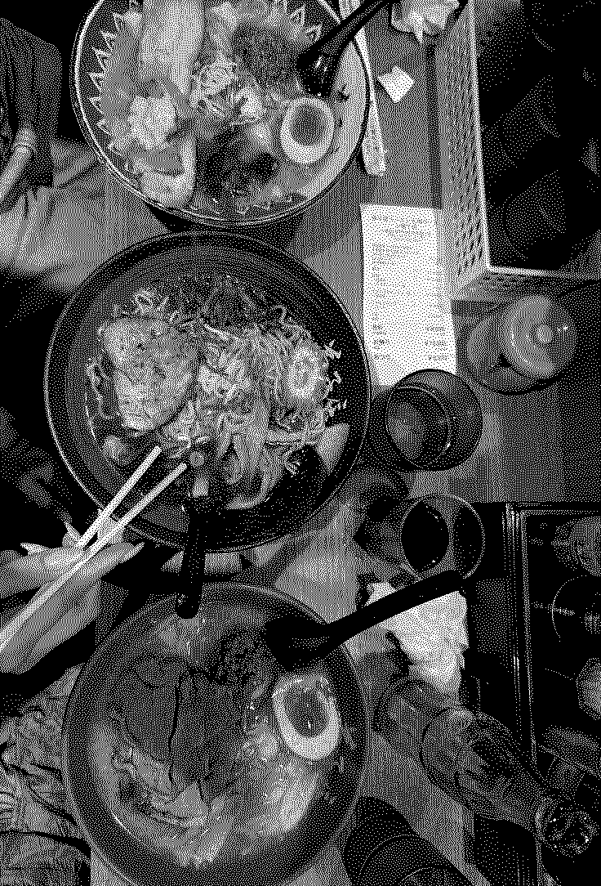
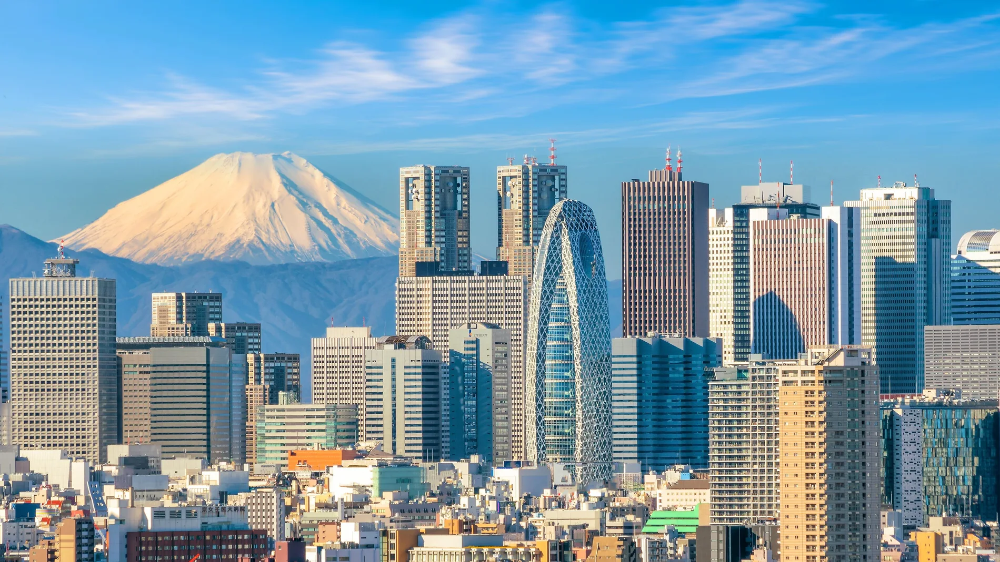

Viajar a Tokio puede ser una experiencia increíble, especialmente para quienes visitan Japón por primera vez. La ciudad combina tradición y tecnología, ofreciendo una cultura muy diferente a la occidental. Por eso, conocer algunos consejos básicos puede hacer que el viaje sea mucho más cómodo y sencillo.
El sistema sanitario japonés es excelente, pero los costes médicos para turistas pueden ser muy elevados. Por eso es muy importante viajar con un seguro que cubra asistencia médica, hospitalización, accidentes y posibles imprevistos...
El metro y los trenes son la forma principal de moverse. Su red es inmensa y eficiente. Aplicaciones como Google Maps facilitan mucho la orientación.

Aunque Tokio es una ciudad moderna, muchos restaurantes pequeños y templos siguen funcionando principalmente con dinero en efectivo.

Alojarse en barrios bien conectados como Shinjuku, Shibuya o Asakusa puede marcar una gran diferencia en los tiempos de desplazamiento.


En Japón el comportamiento en público es muy importante. Es habitual hacer cola para todo y evitar hablar en voz alta en el transporte público.
Tokio es considerada una de las mejores ciudades del mundo para comer. Atrévete a probar especialidades locales más allá del sushi.

Es recomendable tener un itinerario básico, pero muchos de los mejores momentos aparecen simplemente explorando los barrios sin rumbo fijo.
